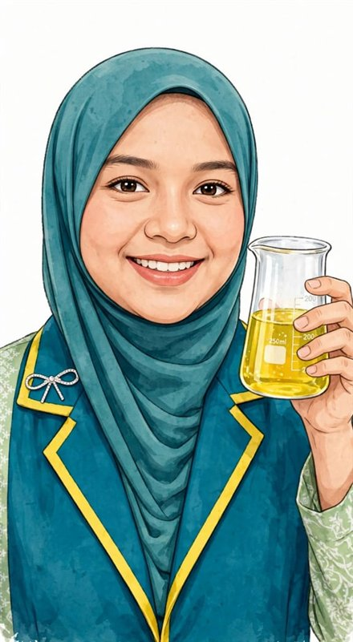
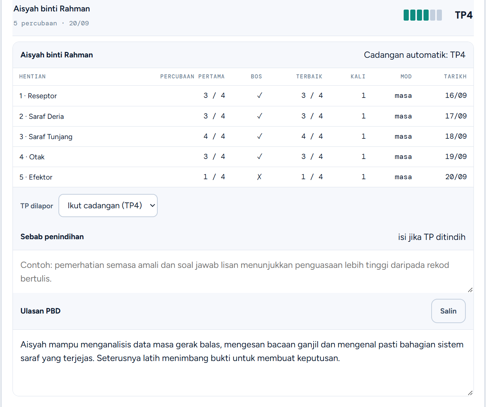
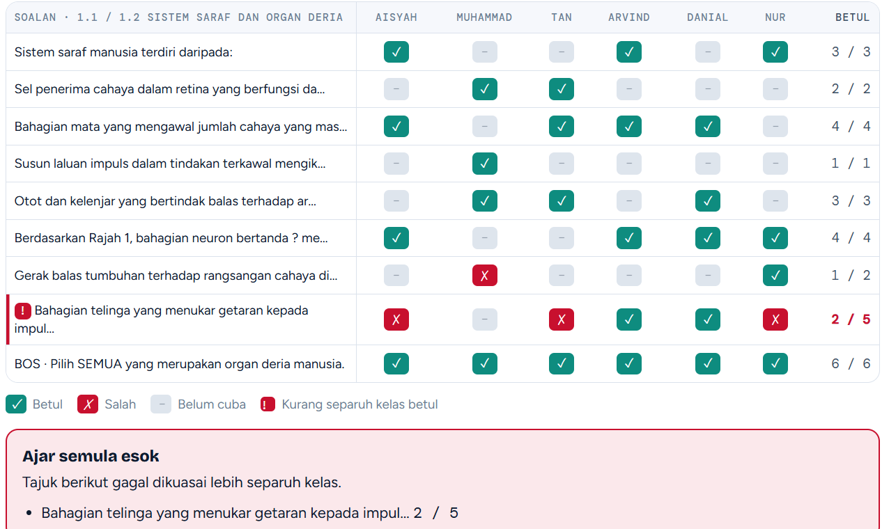

Permainan pentaksiran bilik darjah untuk Sains KSSM Tingkatan 1 hingga 5. Murid jejak peta laluan sains ikut bab, cikgu dapat rekod TP automatik tanpa isi borang manual.
Atau cuba sebagai murid →Dah ada kod kelas daripada cikgu? Masukkan terus di jejaktpsains.naikgred.com
Rakaman sebenar app, bukan animasi. Tekan mana-mana babak untuk lompat terus ke bahagian yang cikgu nak tengok.
51 bab ikut DSKP Tingkatan 1 hingga 5, siap dalam talian — tiada modul untuk dicetak atau fotostat.
Setiap hentian yang murid lepasi terus mencadangkan Tahap Penguasaan. Cikgu tinggal semak dan sahkan, tak payah isi satu-satu.
Setiap percubaan murid disimpan sebagai bukti PBD, siap dengan ulasan yang boleh disalin terus ke SPPB.
Percuma. Muat naik fail Excel atau APDM sekali gus — semua kelas dan PIN murid dijana sendiri.
Murid taip nama dan PIN, terus bermain. Tiada akaun murid, tiada kata laluan untuk diingat.
Enam hentian setiap bab, daripada Mengingat sampai Mereka Cipta. TP dicadang daripada percubaan pertama.
Nampak terus soalan mana kelas tersasar. Data PBD siap dieksport ke Excel bila-bila.
Bukan mockup — ni skrin sebenar dashboard cikgu, daripada kelas contoh yang sama macam yang cikgu boleh cuba di atas tadi.

Setiap murid dapat cadangan TP dan ulasan PBD ditulis automatik ikut prestasi sebenar dia hentian demi hentian. Cikgu sahkan atau ubah, terus salin ke SPPB — tak payah karang sendiri untuk 40 orang murid.
"Aisyah mampu menganalisis data masa gerak balas, mengesan bacaan ganjil dan mengenal pasti bahagian sistem saraf yang terjejas. Seterusnya latih menimbang bukti untuk membuat keputusan."

Grid tunjuk siapa jawab apa, bagi setiap soalan. Topik yang gagal dikuasai lebih separuh kelas terus ditanda "ajar semula esok" — tak payah semak kertas satu-satu untuk tahu di mana nak fokus.
Jejak TP Sains bukan direka oleh jurutera meneka apa cikgu perlukan. Setiap soalan dan istilah disemak oleh cikgu Sains yang mengajar 21 tahun, supaya ia ikut tepat buku teks KSSM — bukan terjemahan atau tekaan. Bab yang belum disemak guru tidak dibuka kepada orang ramai.
"Selama ni, benda yang paling makan masa dalam PBD Sains ialah nak tulis TP untuk setiap murid. Jejak TP Sains selesaikan masalah tu terus." — Cikgu Nani, 21 tahun pengalaman mengajar
Percuma untuk cuba. Bayar hanya bila cikgu nampak ia berbaloi.
🔥 Harga perintis sehingga 31 Dis 2026. Langgan sebelum tarikh ni, harga RM23 kekal untuk cikgu setiap tahun.
Bab 1 dan 2 setiap tingkatan. Sehingga 20 kelas, rekod TP dan eksport PBD ke Excel.
Semua bab Tingkatan 1, 2 dan 3. Ciri lain sama seperti akaun percuma.
Semua bab Tingkatan 4 dan 5. Ciri lain sama seperti akaun percuma.
Mulai 1 Jan 2027, harga jadi RM33 setahun. Cikgu yang langgan sebelum 31 Dis 2026 kekal RM23 setiap tahun, selagi langganan tak terputus. Ajar dua-dua peringkat? Langgan dua-dua, RM23 setiap satu.
Murid masuk guna kod kelas 6 aksara rawak (lebih 800 juta kemungkinan) dan PIN 4 angka — tiada e-mel atau nombor telefon murid direkod. Data tidak dikongsi atau dijual kepada pihak ketiga.
Buat masa ini secara manual — DuitNow atau pindahan terus, hubungi terus melalui WhatsApp daripada dashboard cikgu. Bab premium dibuka dalam masa 1 hari bekerja selepas resit disemak.
Sehingga 60 murid sekelas, dan 20 kelas bagi setiap akaun cikgu — cukup untuk semua kelas yang cikgu ajar.
Ya. Setiap jawapan murid dihantar terus ke pelayan supaya rekod TP tidak hilang, jadi murid perlu talian data atau WiFi semasa bermain.
Lima minit untuk import senarai murid, terus dapat kod kelas untuk dikongsi. Tiada kad kredit diperlukan untuk mula.